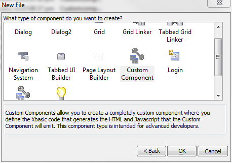
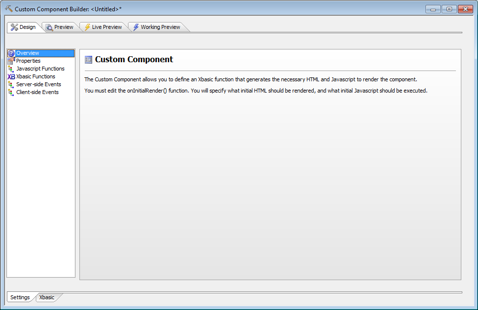
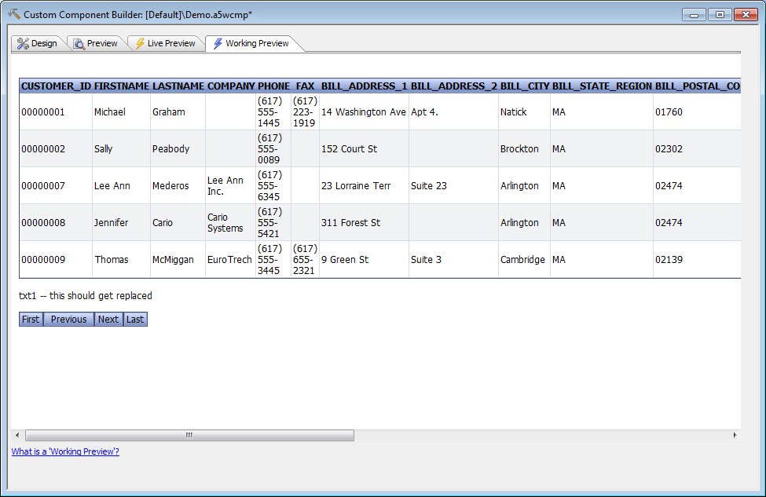

Creating a Custom Component
Step 1
The first step in creating a Custom Component is to open your Alpha Five Web Projects Control Panel and press the New button. Then choose Custom Component from the gallery.
The Custom Component Builder will open in the Overview pane.

As it says there, the Custom Component allows you to create an Xbasic function that in turn generates the HTML and JavaScript needed to render the component. Typically this is done in the onInitialRender server-side event.
Since you haven't defined your onInitialRender event at this point, you will get an error message if you try to preview your custom component. (You can try this anyway, if you like.)
At this point, let's save the component and call it "Demo". If you look in your Web Projects Control Panel, the Demo component should appear next to a hammer icon.
Step 2
Down the left-hand side of the Custom Component builder, you will see Overview, Properties, Javascript Functions, Xbasic Functions, Server-side Events, and Client-side Events. As we mentioned earlier, creating an Xbasic function that in turn generates the HTML and JavaScript needed to render the component is typically done in the onInitialRender server-side event.This is the crux of this particular Custom Component: it will generate HTML and assign it to e.html. In this example we won't set e.javascript, but in Custom Components based on JavaScript APIs most of the work goes into setting e.javascript, while the HTML might have little in it besides the definition of a DIV. In this component, however, the little JavaScript necessary is inside onclick events in HTML button definitions.
If you are building your own Custom Component from scratch, it is worthwhile to first create a prototype HTML/JavaScript/CSS page in a standalone HTML/JavaScript/CSS editor such as Aptana Studio
Getting back to our demo, let's go to the onInitialRender server-side event and paste in the code from the attachment No such attachment on this page. Then go to Xbasic Functions and paste in the code from No such attachment on this page. Save the component.
You'll notice that the contents of the onInitialRender event were relatively short. The heavy lifting for generating the lightweight grid table HTML is done in the Xbasic function renderTable, and the heavy lifting for paginating the lightweight grid is done in the Xbasic function Navigate. We'll look at how they work in the next article.
The component won't preview successfully quite yet. We need to add an argument, and add a table to the project.
Step 3
Go to the Arguments pop-up field in Properties and add an argument named componentArg_whatstate. Make it a character argument with a value set at run-time and a default of "MA". Save the component.Step 4
Go to the Tables/Sets tab of the Alpha Five control panel, right-click, and choose Add Table/Set. You want to add the customer table from AlphaSports. If the AlphaSports sample isn't already installed, you will have to close this project, install it, and then reopen this project.Once the customer table is in your project, you should be able to run the Demo component in working preview. This is how it should look:

The navigation buttons should work.
You now have a working component, but unless you've been digging through the code you probably don't yet understand how or why it works. We will go into more detail in the next article, Custom Component Sections and Events V11.
See also
Custom Components V11Using the Custom Component JavaScript Class V11
Creating a Custom Component V11
Custom Component Sections and Events V11
Sharing and Using a Custom Component V11